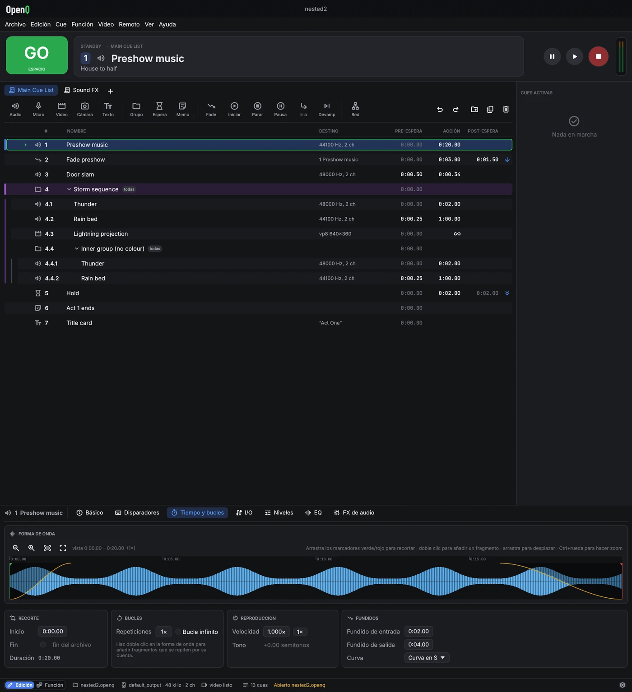
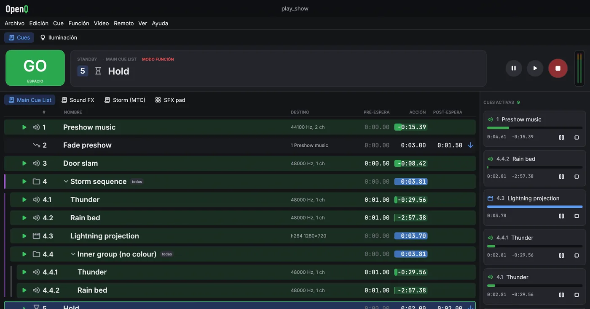
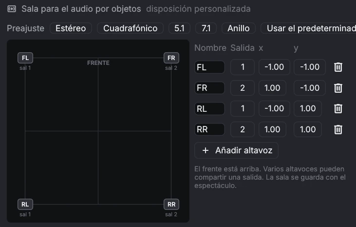

Primeros pasos
1.1Instalación y primer espectáculo
Instalación
OpenQ se instala con su instalador, OQup. OQup descarga la versión más reciente de OpenQ para tu sistema, la comprueba, añade las bibliotecas de FFmpeg que usa para el vídeo (una versión LGPL) y la instala con una entrada en el menú. Con el espacio de iluminación (lo predeterminado) instala también OQVis, el visualizador 3D que abre Abrir en OQVis. Tus espectáculos nunca se tocan.
Necesitas conexión a internet. En Linux, OQup puede pedir tu contraseña para instalar algunas bibliotecas del sistema (sonido, dispositivos); pregunta antes.
Linux
- Abre una terminal, pega la orden de abajo y pulsa Intro:
curl --proto '=https' --tlsv1.2 -fsSL https://github.com/iagonunez/OQup/releases/latest/download/install.sh | sh - El primer paso descarga OQup, comprueba la suma de control publicada y lo guarda en
~/.local/bin. Después arranca. - Si faltan bibliotecas del sistema que OpenQ necesita (ALSA, PipeWire, udev), OQup las muestra y pregunta antes de instalarlas con el gestor de paquetes de tu distribución. Responde que sí; el gestor pedirá tu contraseña.
- Deja la terminal abierta hasta que diga que OpenQ está instalado.
- Abre OpenQ desde el menú de aplicaciones (busca "OpenQ"), o escribe
openqen una terminal.
Si la terminal dice openq: orden no encontrada, ~/.local/bin todavía no está en tu PATH.
Añádela una vez y abre una terminal nueva:
fish_add_path ~/.local/bin # fish
echo 'export PATH="$HOME/.local/bin:$PATH"' >> ~/.bashrc # bash (zsh: ~/.zshrc)macOS
- Abre Terminal (pulsa ⌘ Espacio y escribe "Terminal").
- Pega la orden de abajo y pulsa Intro:
curl --proto '=https' --tlsv1.2 -fsSL https://github.com/iagonunez/OQup/releases/latest/download/install.sh | sh - La app queda en
~/Applications/OpenQ.app, la carpeta Applications de tu carpeta personal, con FFmpeg dentro. Ábrela desde el Finder (Ir → Carpeta personal → Applications) o con Spotlight.
Windows
- Abre PowerShell: pulsa la tecla Inicio, escribe PowerShell y pulsa Intro.
- Pega la orden de abajo y pulsa Intro:
powershell -ExecutionPolicy Bypass -c "irm https://github.com/iagonunez/OQup/releases/latest/download/install.ps1 | iex" - Al terminar, OpenQ está en el menú Inicio y en Configuración → Aplicaciones → Aplicaciones instaladas.
Compilar en tu ordenador
oqup install --build-source compila OpenQ (y OQVis) desde el código fuente en tu ordenador en vez de
descargar la versión publicada. Antes, OQup instala lo que necesita la compilación: una copia privada de Rust si no hay
ninguna, un compilador de C y libclang, y FFmpeg (en Linux con los paquetes de tu distribución, preguntando antes; en
macOS las Command Line Tools de Apple y después FFmpeg compilado desde su código; en Windows las C++ Build Tools de
Microsoft, cuyo instalador se abre para que lo aceptes). Necesita varios gigabytes libres y la primera compilación tarda
mucho; las siguientes son más rápidas.
Si algo falla
oqup doctormuestra qué está instalado y qué le falta a una instalación.- Si la instalación se detiene, lee las últimas líneas que muestra, corrige la causa (casi siempre un paquete que falta o un instalador cancelado) y vuelve a ejecutar la orden.
Actualizar y desinstalar
Para obtener una versión más nueva, ejecuta oqup update: vuelve a instalar OpenQ cuando sale una versión
nueva, de la misma forma que la última vez. oqup versions muestra las versiones que puedes instalar, y
oqup install --ref v0.4.0 instala una de ellas. Para quitar OpenQ, ejecuta oqup uninstall;
pregunta antes. Con --purge quita también las descargas, el Rust, las dependencias y la caché de compilación
de OQup. En Windows también puedes quitarlo desde Configuración → Aplicaciones → Aplicaciones instaladas. Tus
espectáculos nunca se tocan.
Si solo necesitas cues, oqup install --no-lighting instala OpenQ sin el espacio de iluminación (sin vista
Iluminación, cues de luz, descargas de aparatos ni OQVis). Los espectáculos con un diseño de iluminación se siguen
abriendo, lo conservan y reproducen sus cues de luz. oqup install --lighting lo vuelve a añadir;
--no-oqvis mantiene la iluminación pero deja fuera OQVis.
Para ejecutar una copia en la que estés trabajando desde el código fuente:
cargo run --release # empezar con un espectáculo vacío
cargo run --release -- show.openq # abrir un espectáculo guardadoEste manual viene dentro de OpenQ: elige o pulsa F1 para abrirlo en tu navegador, en el idioma de la interfaz. Funciona sin conexión a internet y siempre corresponde a tu versión de OpenQ.
Tu primer espectáculo
- Arrastra archivos de audio o vídeo desde tu gestor de archivos a la ventana. Cada archivo se convierte en una cue. También puedes usar .
- Añade otras cues desde la barra de herramientas sobre la lista de cues, o pulsa Ctrl+1…0.
- Selecciona una cue y ajusta sus opciones en el inspector, en la parte inferior de la ventana.
- Haz clic en la primera cue para poner el cabezal (playhead) sobre ella y pulsa Espacio (GO).
- Guarda con Ctrl+S. Los espectáculos se guardan como archivos
.openq. Las rutas de los medios se guardan relativas al archivo del espectáculo, así que puedes mover la carpeta del espectáculo entera.
Guarda el archivo del espectáculo en la misma carpeta que sus medios. Así la carpeta se puede copiar a otro ordenador y abrirse allí sin cambios.
Empaquetar un espectáculo
copia el espectáculo y todos los sonidos y películas que usa en
una carpeta: elige dónde y OpenQ crea una carpeta con el nombre del espectáculo, con su archivo dentro y los
medios en audio/ y video/. Copia esa carpeta a otro ordenador o guárdala como archivo. Los
archivos que faltan en el disco se listan y se dejan fuera. El espectáculo que tienes abierto no cambia.
1.2La ventana principal

- Barra de título: el nombre del espectáculo (un punto indica cambios sin guardar). En Windows también contiene los botones de minimizar, maximizar y cerrar: arrastra la barra para mover la ventana, haz doble clic para maximizarla y arrastra cualquier borde para cambiar su tamaño.
- Menús: Archivo, Edición, Cue, Función, Vídeo (escenarios y salidas), Remoto, Ver (vista previa de geometría, registro del motor) y Ayuda (este manual, el registro de errores, acerca de y licencias).
- GO dispara la cue que está bajo el cabezal. La tarjeta Standby muestra esa cue, con sus notas debajo para que el operador pueda leerlas antes de pulsar GO.
- Transporte: pausar todo, reanudar todo, parar todo. Al lado, los medidores de salida muestran cada canal del dispositivo en dB.
- Pestañas de listas: una pestaña por lista de cues (ver más abajo).
- Lista de cues: número, nombre, destino (datos del archivo o la cue de destino), pre-espera, tiempo de acción, post-espera y la flecha de continuación. Las cues en marcha se vuelven verdes y su columna de acción hace la cuenta atrás. Un icono rojo marca un archivo o destino que falta. Los archivos se comprueban en segundo plano cada par de segundos, así que una unidad de red lenta nunca congela la ventana, y una unidad que se vuelve a conectar quita el icono por sí sola.
- Cues activas: cada cue en marcha con su tiempo transcurrido y restante, y sus propios botones de pausa y parada.
- Inspector: los ajustes de la cue seleccionada, en pestañas. Cada pestaña agrupa sus ajustes en tarjetas. Se abre con altura suficiente para mostrar una pestaña entera; arrastra su borde superior para cambiar su tamaño.
- Barra de estado: el interruptor Edición / Función a la izquierda, y después el dispositivo de audio, el estado del vídeo, OSC, las conexiones remotas y los mensajes. El botón de la derecha abre los ajustes. Un aviso del motor aparece a su lado durante unos segundos y abre el registro del motor; los mensajes de la parte izquierda de la barra también desaparecen al cabo de unos segundos.
Trabajar con la lista de cues
- Haz clic en una cue para seleccionarla y mover el cabezal a ella. Usa Ctrl-clic para seleccionar varias cues, Mayús-clic para un rango, y ↑ ↓ para mover el cabezal.
- Arrastra las cues para reordenarlas. Suéltalas en el centro de la fila de un grupo para meterlas dentro.
- Haz doble clic en un número, nombre, pre-espera o post-espera para editarlo en el sitio. Intro confirma y Esc cancela.
- Haz clic en la columna de continuación para pasar por no continuar → autocontinuar → autoseguir.
- Haz clic derecho en una fila para iniciar, parar, duplicar, borrar y más.
Listas de cues
Un espectáculo puede tener varias listas de cues, por ejemplo la secuencia principal y una lista de efectos de sonido para disparar a mano. Cada lista tiene una pestaña sobre la barra de herramientas; haz clic en una pestaña para traer esa lista al frente. GO, el cabezal y la tarjeta de espera trabajan sobre la lista del frente, y cada lista recuerda dónde estaba su cabezal.
- Haz clic en para añadir una lista. Haz clic derecho en la pestaña de la lista actual para renombrarla (o doble clic), moverla, ajustar su código de tiempo o borrarla.
- Las cues siguen sonando al cambiar de lista, y las cues Iniciar, Parar, Fade y otras pueden apuntar a cues de cualquier lista. En el menú de destino, las cues de otras listas muestran el nombre de su lista.
- Los números de cue son comunes a todas las listas, así que OSC y los atajos llegan a cues de cualquier lista.
Listas cart
Una lista de cues puede ser un cart: una cuadrícula de botones que disparan cada uno su propia cue, para efectos de sonido a demanda, ráfagas o cues de reserva. Haz clic derecho en la pestaña de la lista y marca Cart: una cuadrícula de botones; debajo se fija cuántos botones hay a lo ancho y a lo alto (aparecen más filas si hay más cues). Un cart no tiene cabezal: GO no hace nada en él.

- Modo función: haz clic en un botón para disparar su cue; una cue que ya está en marcha hace lo que diga su ajuste de segundo disparo (reiniciar, por defecto). Clic derecho en un botón para parar su cue. Un botón en marcha se llena con su progreso y muestra el tiempo que queda.
- Modo edición: clic en un botón para seleccionarlo (el inspector lo edita), doble clic para dispararlo, y arrástralo a otra celda para moverlo allí (se intercambia con el botón que haya). Las cues nuevas ocupan la primera celda libre.
- Los atajos y los disparadores MIDI y de timecode disparan las cues de un cart como cualquier otra.
1.3Modo edición y modo función
El modo edición (Edición) es para montar el espectáculo: todo se puede cambiar. El modo función (Función) es para llevarlo. La lista queda bloqueada, la barra de herramientas y el inspector se ocultan, y las filas se hacen más grandes para leerlas con facilidad en una cabina a oscuras. GO, parar, pausa, los atajos y mover el cabezal funcionan en los dos modos.
Cambia con el interruptor a la izquierda de la barra de estado, , o Ctrl+E.

Parar
Esc o el botón rojo de parada funde todo a silencio durante el tiempo de fundido de Parar todo (ver Ajustes). Púlsalo otra vez durante ese fundido para parar al instante.
La protección contra doble GO ignora un segundo GO que llegue muy poco después del primero, para que una tecla que rebota no se salte una cue.
1.4Ajustes
, o el botón a la derecha de la barra de estado. Se guardan con el espectáculo, salvo el idioma y la entrada MIDI de las superficies de control, que son de cada ordenador.
| Pestaña | Ajustes |
|---|---|
| General | Idioma de la interfaz (español, gallego o inglés; cambia al momento), tiempo de fundido de Parar todo, protección contra doble GO, volumen general, OSC activado y puerto. |
| Audio | Dispositivo de salida. Cambiarlo para toda la reproducción. Las matrices de enrutado apuntan a las salidas de este dispositivo. La sala para audio por objetos: los altavoces, dónde están y a qué salida va cada uno. |
| Escenarios de vídeo | Añadir y nombrar escenarios, tamaño del lienzo, pantalla de salida, pantalla completa, mapping. |
| Superficies de control | La entrada MIDI de este ordenador y las asignaciones de superficies de control del espectáculo, con aprendizaje. |
Ajustes → General también tiene la sonoridad objetivo para nivelar cues (Sonoridad); Ajustes → Audio, los patches de audio.

Mientras no la cambies, la sala sigue al dispositivo de salida: un par estéreo, cuadrafónico, 5.1 o 7.1 (sin altavoz en la salida LFE), o un anillo para otros números de canales. Los preajustes configuran esas salas, y Usar el predeterminado vuelve a seguir al dispositivo. El frente, donde está el escenario, queda arriba. Varios altavoces pueden compartir una salida.
Los ajustes de acceso remoto y las claves de los dispositivos pertenecen al ordenador, no al espectáculo. Están en
~/.config/openq/remote.json, legible solo por tu cuenta de usuario.
1.5Atajos de teclado
| Teclas | Acción |
|---|---|
| Espacio | GO |
| Esc | Parar todo (con fundido); pulsa otra vez para parar al instante. También cancela una edición en una fila. |
| P / R | Pausar todo / reanudar todo |
| ↑ ↓ | Mover el cabezal |
| ← → | Plegar / desplegar un grupo |
| Ctrl+E | Cambiar entre modo edición y modo función |
| Intro | Renombrar en el sitio la cue seleccionada |
| Ctrl+1 … 0 | Nueva cue Audio, Vídeo, Grupo, Espera, Memo, Fade, Iniciar, Parar, Pausa, Ir a |
| Ctrl+D · Ctrl+G · Supr | Duplicar · agrupar la selección · borrar |
| Ctrl+Z · Ctrl+Mayús+Z | Deshacer · rehacer (hasta 200 pasos; los espectáculos muy grandes guardan menos, al menos 10, para ahorrar memoria) |
| Ctrl+N / O / S / Mayús+S | Nuevo / abrir / guardar / guardar como |
| F1 | Abrir este manual de usuario |
| F11 | Pantalla completa, en una ventana de escenario |
| ← → ↑ ↓ (+Mayús) | Mover 1 (10) píxeles la esquina bajo el ratón al hacer mapping |
| Atajo de la cue | Dispara esa cue directamente (se ajusta en la pestaña Disparadores) |